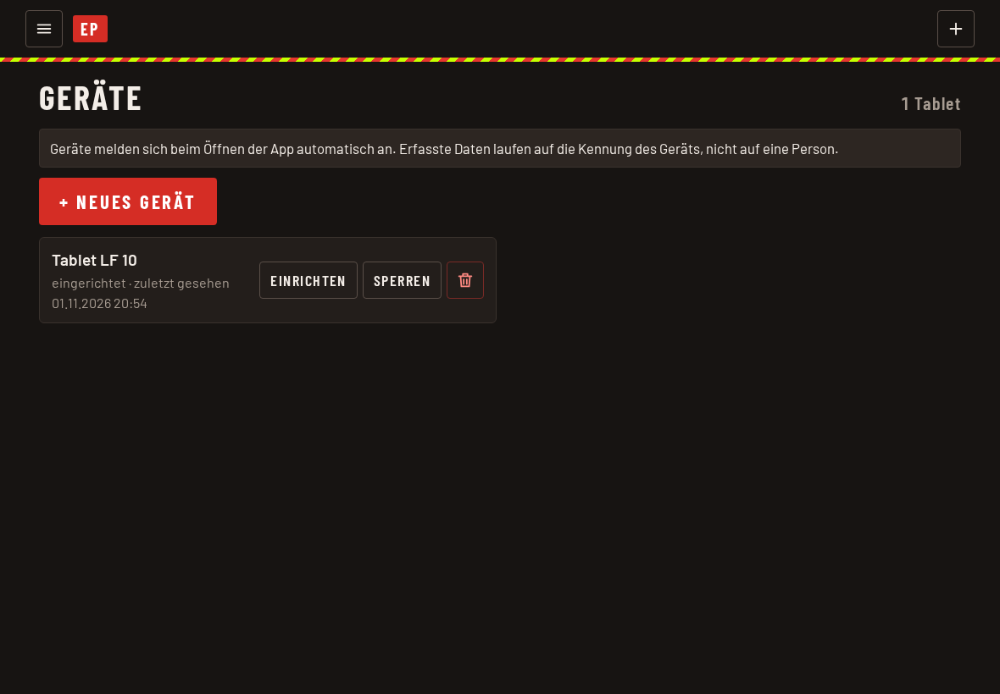

Geräte, Fahrzeuge und Webhooks
Diese Einstellungen gibt es im Einsatzprotokoll und sind für den Admin.
Fahrzeuge
Unter „Fahrzeuge verwalten“ legt ihr jedes Fahrzeug an, das in einem Einsatz vorkommen kann:
- Kennung (zum Beispiel 3/43) und Name (zum Beispiel LF 10)
- Positionen, durch Komma getrennt. Das sind die Plätze der Besatzung, etwa MA, GF, AF, AM.
- Sortierung in der Auswahl
Erst danach stehen die Fahrzeuge im Einsatz zur Auswahl.
Nachbar-FFen
Unter „Nachbar-FFen verwalten“ pflegt ihr die Feuerwehren, die im Einsatz unter „FFen vor Ort“ angehakt werden können.
Geräte (Fahrzeug-Tablets)
Ein Gerät ist ein festes Tablet im Fahrzeug. Es meldet sich ohne Passwort selbst an. Erfasste Daten laufen dabei auf die Kennung des Geräts, nicht auf eine Person.

So richtet ihr ein Gerät ein:
- Im Menü „Geräte verwalten“ öffnen und „+ Neues Gerät“ antippen.
- Namen eintragen und speichern. Es erscheint ein QR-Code.
- Den Code mit der Kamera des Tablets scannen. Er führt auf die Seite /einsatzprotokoll/enroll eurer App und gilt 15 Minuten und nur ein einziges Mal. Klappt der Scan nicht, öffnet ihr die darunter angezeigte Adresse am Tablet. „Adresse kopieren“ hilft dabei.
- Am Tablet die App zum Startbildschirm hinzufügen (siehe App installieren und anmelden).
Ein Gerät lässt sich später sperren oder neu einrichten, wenn das Tablet ersetzt wird.
Webhooks
Webhooks melden einen neuen Einsatz an andere Systeme weiter, etwa an die Hausautomation für das Licht im Treppenhaus. Sie werden nach dem Anlegen eines Einsatzes der Reihe nach aufgerufen, damit die Alarmierung selbst nicht wartet. Ein nicht erreichbares Ziel wird übersprungen.
Pro Webhook gibt es Name, URL, Reihenfolge und Aktiv. In der URL könnt ihr Platzhalter verwenden: {keyword}, {unit}, {id}, {datum}, {uhrzeit}. Ohne Platzhalter wird ?tag=<Stichwort> angehängt.
Der oberste Eintrag ist das Ziel, das die Wehrführung fest in Cloudflare hinterlegt hat. Es wird als Erstes aufgerufen und lässt sich hier nur prüfen, nicht bearbeiten, damit die Adresse nicht sichtbar wird.